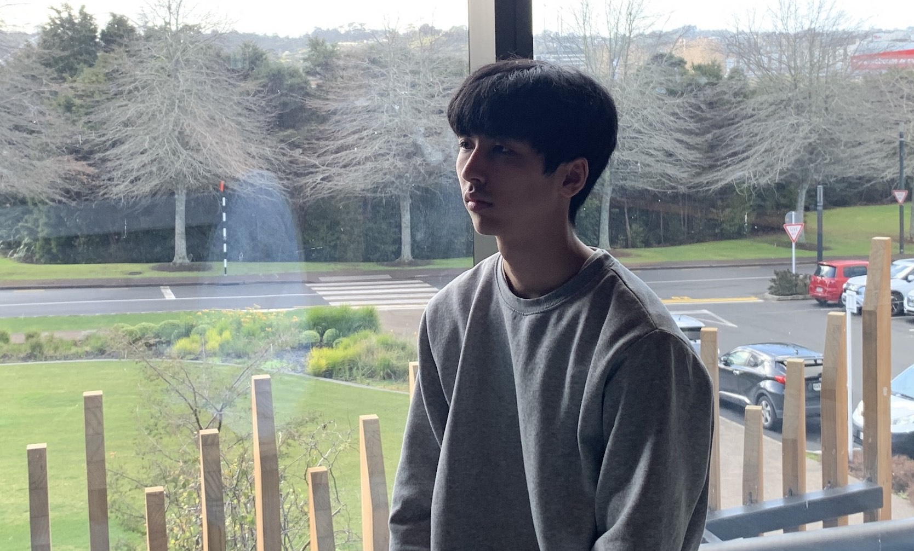
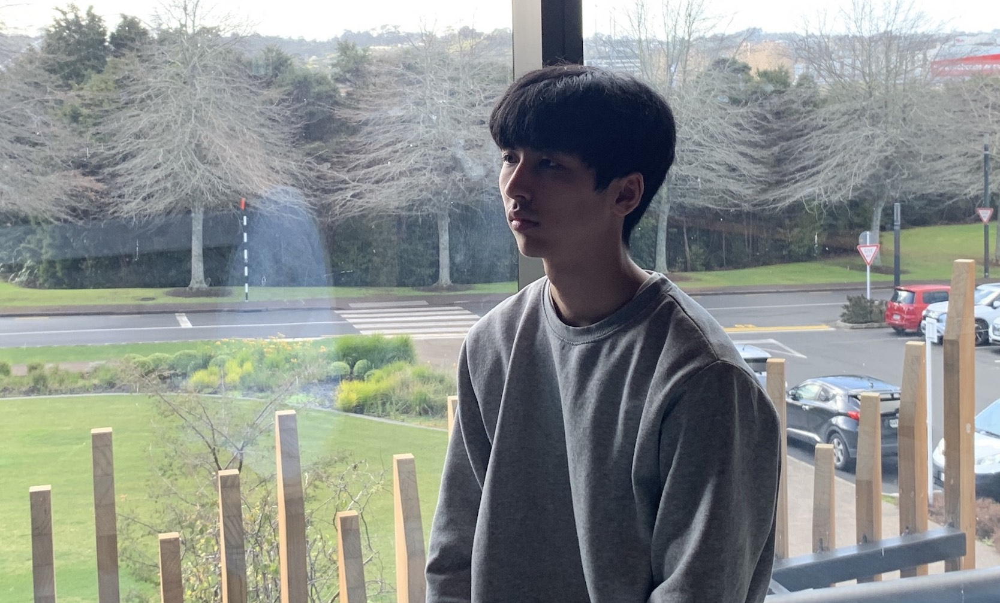
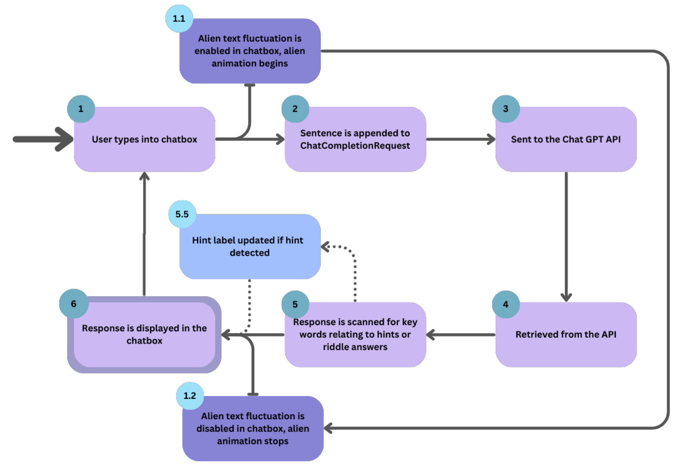
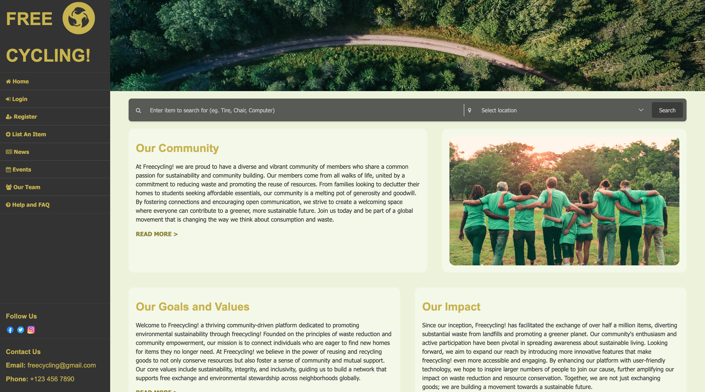
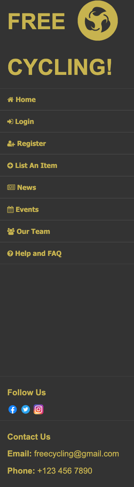
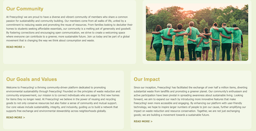
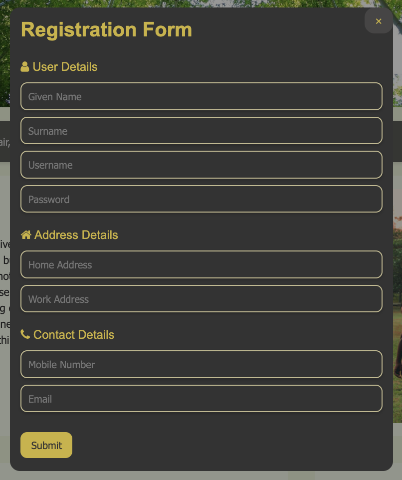

Andy Lee
Penultimate Software Engineer Student at the University of Auckland
Penultimate Software Engineer Student at the University of Auckland
Simulating the Future of Autonomous Driving for Virtual Test Environments

The future of AI
JAVA - Deeplearning4j - Neural Network - Multithreading - Buffering - Event Handling - Graphics2D
Github Link - https://github.com/andy7937/neural-network-aicar
Context
This project was created to simulate the future of autonomous driving for virtual test environments.
The neural network was trained using a genetic algorithm to navigate a virtual car around a track.
The code was written in Java and used the deeplearning4j API for the neural network configurations.
This was the first project that I had begun without any structural help from a tutor or supervisor,
meaning that I had to learn how to implement a neural network, genetic algorithm, and the deeplearning4j API from scratch.
The project was a success and the car was able to navigate around the track with a high level of accuracy.
Skills and Techniques
Many skills and techniques were learned during the development of this project, such as how neural networks function,
how to calculate distances in a 2D space, what inputs to use, and how to train the network using those inputs to achieve
the desired output. One of the key insights that I learned was that the neural network was only as good as the data that
was fed to it.
Mistakes and Insights
One such mistake was I inputted the coordinates of the nearest walls to the car in each sensor direction.
This was completely useless for the neural network, as it was unable to determine the distance between the car and the wall.
After fiddling with the code and repeatedly trying to figure out the mistake, I finally realized that instead of giving the
coordinates of the wall, I should have given the distance between the car and the wall. This showed me that even very
obvious issues can be overlooked, and that it is important to take a step back and look at the problem from a different angle.
Future Improvements
If I were to begin this project again, I would have spent more time researching the deeplearning4j API and further how to implement my own
neural network. I would like to have also added more outputs to the neural network, such as the speed of the car, as the car
was only able to move at a constant speed.
Another feature I would implement in a better way is how the map is made. The map is currently made using coordinates between the
start and end of the walls, meaning that the map is not very flexible. I had implemented a function that allowed you to use your
mouse to draw the map, but it was not very user-friendly and was not very accurate. This meant that expanding or creating
new maps was very difficult and time-consuming. If I were to do this project again, I would have spent more time researching
how to create a map using a more user-friendly method, such as using a map editor.
Reflection
I believe overall this was a very great first project and experience in starting a project in general. One thing I learned was to add more documentation and create a more structured plan before starting the project as currently the classes and methods are not very well documented and the code is not very structured. This made it very difficult to add new features or fix bugs.
Advanced Packet Analysis: Monitoring, Logging, and Detecting Malicious Network Activity

Network Security and Analysis
C++ - NpCap -
Github Link - https://github.com/andy7937/packet_sniffer
Context
Skills and Techniques
Mistakes and Insights
Future Improvements
Reflection
Simulated Bank Management: User Registration, Login, and Secure Fund Transfers with MySQL Integration


The future of AI
JAVA - SpringBoot - MySQL - HTTP
Github Link - https://github.com/andy7937/internet-banking-software
Context
Skills and Techniques
Mistakes and Insights
Future Improvements
Reflection


Simulating Dynamic Interactions with ChatGPT API for an Engaging Gaming Experience

Open AI Integration into Gaming
JAVA - OpenAi - Collaboration
Github Link - https://github.com/andy7937/escape-room
Context
The Alien AI Game was created to simulate dynamic interactions with the ChatGPT API for an engaging gaming experience.
The game was created in Java and used the OpenAI ChatGPT API to create a simulated conversation between the user and the alien.
The game was a success and the AI was able to generate riddles and hints for the user to solve in order to progress through the game.
Using the GPT API in our application allowed for many opportunities for novelty and creativity to be developed in our project. One such
example of this was how we incorporated the AI to interact with the player, specifically with how we had multiple different personalities
of different GPT instances in each room. One alien had an angry personality, one had a happy personality, and another had a sad personality,
and many more. This meant that when you interacted with each alien in every room, you would get a completely different response for your
inputs. This made the game feel much more real and interactive. We incorporated this feature by creating multiple GPT instances for each
room and gave them a prompt in which we would tell them the type of personality to take, which resulted in each room having different
personalities.
Another cool feature was how you could ask the GPT questions beyond just answering the riddle. For example, you could interact with the
alien like a real alien, and ask questions that were outside the scope of the gameplay itself. This helped the game feel more unique from
other applications.
This feature was further expanded in the flavour text, where if you were to click on an object, the alien would give a description of the
object, which did not need to be hard coded responses but actual responses from the AI, meaning the player would get a completely different
description of the object each time they played the game.
Lastly, is the riddle system. A random riddle is always created by the AI for any possible object in the game, increasing the replayability
of the game itself due to its randomness. For example, if the object in question for the riddle was a boot, if you played the game and got
the same object twice, the riddle itself would be different for each playthrough, therefore even if you were familiar with the objects, solving
the riddle itself still poses a challenge for players.
GPT API Diagram

The diagram above shows the process involved when the user interacts with the AI within our application.
Each stage of the process is indicated by the numbers displayed within the diagram.
In Stage 1, the user begins with typing the start of their conversation inside the chatbox. Once it has
been entered and the user sends the text, the process moves to Stage 1.1, where the text within the text
box starts fluctuating with an ‘alien language’, as this is our theme for the game. Along with this, the
alien in the current room begins to animate, appearing like it is talking. This, as well as a ‘Translating…’
label that is also made visible, helps indicate to the user that the response from GPT is loading.
The user is also unable to type and send any responses at this time. While this happens, Stage 2 appends
the inputted sentence from the user to a list stored in the ChatCompletionRequest class. This list stores
all previous conversations depending on the alien the user is talking with, and will be sent to the Chat
GPT API in stage 3.
A response is then generated and influenced based on the original context given to the AI from the
GptPromptEngineering class. In stage 4, this response is retrieved from the API to the ChatCompletionRequest in
the form of a ChatCompletionResult. This then is moved to stage 5, where the response is scanned for keywords
relating to hints or riddle answers.
When giving the AI context back in stage 3, it was instructed to surround any hints given with ‘###’, and if
a riddle was correct, to begin the sentence with ‘Correct!”. If either of these are noticed throughout the
scanning process, changes are made in the GUI to reflect this. As seen in stage 5.5, if a hint is detected,
then the hint counter will be updated accordingly depending on the difficulty of the level.
As the response is displayed in the textbox, the fluctuating text that was initiated at the start of the loading
process is stopped, and the ‘Translating…’ label is made invisible to indicate that the process has stopped
loading and has produced a response. From here, the user can now type a response to the AI again.
Skills and Techniques
Integration of Chat GPT API
In order to integrate GPT 3.5 into our application, we used the OpenAI Chat GPT API. This allowed us to create a simulated
conversation between the user and the alien.
To do this, we created a ChatCompletionRequest, this allowed us to send a message to the API and receive a response. Each
alien in the game was a separate instance of this class, meaning each alien could have a unique prompt and response
depending on the user interactions. This also meant that the user’s conversation history with the alien was not carried
over to another alien.
The ChatCompletionRequest would be updated each time the user sent a message, the message being added to a list within the
class. This list was used to keep track of the chat history. The entire list would be sent to the API each time a new prompt
was created.
We added prompt engineering methods to create different prompts depending on the alien, the room they were in, and the player's
progress. This meant the aliens had unique personalities and responses. Also, whenever the AI was talking, a “Translating...”
label was shown, along with the text fluctuating in an alien language. This added to the immersion and reduced the perception
of latency.
API Cost Considerations
Whenever we created a new prompt and wanted to test it out, we made sure to do the testing on the OpenAI
playground, using the free tokens given to new accounts. This allowed us to study how player interaction
would affect the AI without having to actually play the game and potentially use up the limited number of
tokens allocated to us.
Furthermore, whenever the user asks for a hint, a new ChatCompletionRequest is created. This means that the
full chat history isn’t being sent every time a hint is needed, reducing the number of tokens needed per API
request. We also had a different ChatCompletionRequest for each alien, so if the user mostly interacts with
a particular alien, and then interacts with a different alien, the chat history isn’t being carried over.
Thus, the “useless” chat history of the old alien isn’t needlessly bloating the API calls of the new alien.
One of the features we added was flavor text being generated by the AI when the user clicks on an object.
We felt that it added a fun touch to the game, but it came with the cost of using tokens for something that
was technically “useless”. So, we added the option to turn off the flavor text, thus saving on API calls.
Finally, we overcame the user-perceived latency of the API calls by justifying the wait within the theme
of the game. Since the application is themed around interacting with aliens, we explained the latency as
the translation device simply taking some time to process the alien speech. We also added a cool effect
of alien text “fluctuating” before being translated into English, reinforcing the theme and making the
latency less noticeable.
Prompt Engineering Crafting
The first iteration we made was changing the prompts from the alpha code to better fit the theme of space and aliens. We
originally only had one alien, and there weren’t that many issues other than some of the responses feeling slightly bland.
Then, we decided to incorporate multiple aliens. We did this by creating a ChatCompletionRequest for each alien at the
start of each round. However, since these ChatCompletionRequests had no prompts in them, if the user directly spoke to
an alien using the chat box, they would not act like aliens. This wasn’t a problem in the first iteration as the alien
in the main room is given a prompt to explain the game immediately after the game starts. Thus, the aliens in the other
rooms would not have this prompt.
To fix this, we added a Prompt Engineering method to the GptPromptEngineering class. This way, all aliens would have
the same introduction when initially interacting with the user. Once this was done, there was more iteration with the
alien responses and how they interacted with the user. Some aliens were nicer and more helpful, while others were very
vague and unhelpful.
API Throttling and Latency
Latency between the front end of our application and the ChatGPT API is an issue that may deter some players from
continuing the game, especially if they are waiting too long for a response. However, latency is an issue that we
cannot solve entirely, as it depends on multiple factors like the players internet connection, and the current usage of the API.
The biggest issue latency-wise we had was in the generation of riddles for players to solve. As we had the AI generate
a random riddle each time, this would take a lot of time due to the AI generating a brand new answer each time. Due
to this, we decided to create multiple prompts that would limit the riddle generation and hint giving to multiple
scenarios. This meant that depending on the alien and what room they were in, the hint/riddle generation would be much
faster as it wouldn’t need to create something brand new.
Another issue we had was the frequency of the API calls. Due to the cost of the OpenAI API, we decided to throttle
our API requests so that we wouldn’t waste tokens. This was done by ensuring that each ChatCompletionRequest was stored
and appended to, meaning the prompt would be sent, then once a user responded, the prompt and response would be sent.
This was faster and reduced the latency. To further throttle the API usage, we added the feature where flavor text was
optional. The generation of flavor text was done by calling the API with the same prompt but with a different “intent”.
This meant the response would include flavor text.
Mistakes and Insights
GPT Challenges
One big problem was with getting the AI to generate riddles. No matter how much prompt engineering we did,
the AI would occasionally generate a riddle, then in the same response, it would give away the answer to the
riddle, sometimes adding in other random text. This would happen even after explicitly telling the AI not
to do this. To solve this issue, we made the AI surround the riddle with the string “###”. Then, when the AI
came back with a response, we had code that used regex in order to detect the string, and extract only the
riddle using this string as a marker. This would mean that any irrelevant content would not be shown to the user.
Another problem we encountered was getting the hint system working. We weren’t quite sure how to detect when
the AI would give a hint with 100% certainty, and we were worried that the user might ask the AI for a hint
to something that it had no context for, causing it to output misleading information.
In order to fix both of these issues, we had users say a specific phrase when asking for a hint. This helped
with detecting whenever a hint was being given. Then, the AI would be given the relevant information for the
hint depending on the game's progress in order to generate its response. Since the user isn’t able to just
ask for a hint about anything, this reduces the likelihood of the AI misunderstanding something and giving
false information.
Prompt Engineering Challenges
There were many challenges we faced in prompt engineering. One of the main challenges to this was how the GPT AI would
take prompts at face value, and would sometimes add unnecessary context to your prompt that could be incorrect and increase
the length of the text, resulting in much more GPT credits being used then anticipated. One way to fix this issue was to
give enough context and detail around the prompt in order for the AI to not have any room to misinterpret context.
With the issue of the AI writing too much for their responses, adding a word limit to the prompt stopped the AI from using
too many GPT credits.
Also, while responding to user inputs, sometimes the AI would break character of the alien and talk as the GPT AI, which
destroyed the immersion of the game. This was fixed by adding in the prompt telling the AI to never break character.
This also applied to the consistency of the AI, in which we would need it to not break character throughout the entire
game, and sometimes it would randomly change its persona/tone. This was fixed by adding in the prompt to keep its persona
for the entirety of the game.
Due to questions asked by the player, sometimes being ambiguous and hard to interpret for AI, the AI would struggle to
understand what the player was asking for, leading to confusing responses that would not help the player and in some cases
actually hinder the player's progress. This was fixed by mimicking the players perspective and asking questions we thought
the player could ask. This helped us understand when and where the AI could get confused, and therefore allowed us to
iterate our prompt engineering to be more clear and understandable.
Future Improvements
If we were to continue this project, we would have liked to have added more features to the game. One such feature would be
to have the AI generate more than just riddles. We would have liked to have the AI generate more complex puzzles, such as
math problems, or even have the AI generate a story that the player would have to solve. This would have added more variety
to the game and would have made it more engaging for the player.
Another feature we would have liked to add was seperate endings depending on the player's choices. We would have liked to have
the AI generate different endings depending on the player's choices throughout the game. This would have added more replayability
to the game and would have made the player feel like their choices mattered. This was not possible due to the time constraints and
project specifications given by the client.
Reflection
Incorporating GPT into our escape room application has had a large impact on our perspective on the future of software engineering.
One main aspect that we discovered throughout this project, was how easy it was to create a personalised experience for users when
taking advantage of AI during the game. Because you can build on previous conversations with the AI, it can create a feeling of
uniqueness everytime you play. Exploring this aspect throughout the process of making the escape room game really showed the potential
that GPT offers for the future of software engineering. Being able to provide such personalised responses when given context could
lead to a future of hyper-personalised experiences for users. Having this ability to use AI could open the door to an era of software
that feels more dynamic and intelligent, rather than a fixed application. This however could be quite dangerous as the ethical importance of
AI design and security would continue to grow. Due to the large amount of data that would be generated to provide a personalised
experience, the privacy aspect of this would need to be taken very seriously as it could lead to serious privacy breaches if not
handled with the utmost care. AI security will undoubtedly make a large impact on the future of AI incorporated software design.
AI can produce various opportunities and challenges for professional software engineers in the era of LLMS. After working on this game,
one of the opportunities that arose that could be useful for professional software developers is the ability to streamline and automate
various aspects of software. With AI, developers have the ability to generate complex and detailed stories which would save time, and
potentially be more personalised towards different users. This could help create more unique user experiences, and that way, software
engineers can focus their time on higher level tasks. Some of the downsides to this however, is the unreliability of the output from
LLMs. The responses can vary and occasionally produce flawed information which could be very detrimental depending on the software.
LLMs can also be very expensive. Training and maintaining these models require substantial resources, including powerful hardware and
large energy consumption. As well as this, licences and subscription fees could prove to be a major barrier for smaller software companies.
Simple free cycle website for UX design showcase
Free Cycle UX design
HTTP - CSS
Github Link - https://github.com/andy7937/High-Fidelity-Prototype
Home Page
The homepage layout clearly distinguishes between the figure (main content area) and the ground (side navigation bar and top image slider
banner), which helps in creating a visual hierarchy. This distinction helps in directing the user's focus to the main content immediately
after the more visually contrasting navigation and banner areas.
The layout uses an asymmetrical balance where the side navigation bar and the top image slider are strategically placed to balance the
visually heavier main content area. This balance is crucial for maintaining a pleasing aesthetic without overwhelming the user, enhancing
the overall user satisfaction and experience.
The consistent use of brand colours, text sizes, and thematic imagery across the homepage promotes a strong visual unity, reinforcing the
Freecycling brand image. This consistent design not only enhances subjective satisfaction but also supports the usability principle of
Consistency and Standards, facilitating an enjoyable user experience.
Using the theme colour for key titles, combined with making these titles larger, distinctly reinforces the brand identity across the website.
This design decision not only elevates the brand’s visibility but also creates a strong visual hierarchy, guiding users through the content
more intuitively. This approach leverages the Gestalt principle of Similarity, where elements that are alike in colour and size are perceived
as related and important, making key information stand out effectively.
Incorporating icons alongside text in each navigation option greatly boosts the site’s accessibility. Icons serve as powerful visual aids that
simplify the navigation process. They provide immediate recognition benefits, enabling users to understand navigation options more quickly than
text alone. This design choice effectively applies the Gestalt principle of Recognition Rather Than Recall by reducing the cognitive load
required to remember what each navigation option does and helps accessibility for users that do not know the english language well.

Navigation Bar
Positioned consistently across all pages, the navigation bar empowers users with the control and freedom to easily switch between sections without
losing focus.
The dark grey background of the navigation bar starkly contrasts with the main content’s lighter hues, helping easy navigation discovery.
This design choice enhances user experience by simplifying access to various site sections and maintaining focus on navigation elements.
The placement of essential links and company information at the bottom of the navigation bar uses the principle of Proximity to enhance
discoverability and user interaction, ensuring these elements are neither overlooked nor disturb the primary navigation focus of the website
sections.
Enlarging the title name and accompanying icon serves to draw user attention to these elements. By increasing their size relative to other
textual and graphical elements, these components are immediately noticeable upon page entry increasing memorability.

Main Content Area
The main content area is segmented into well-defined parts, using white space to enhance readability and reduce cognitive load, consistent
with Nielsen's heuristics of Aesthetic and Minimalist Design. This helps in guiding the user through the content logically and intuitively
without clutter.
The upper and lower sections of the main content area employ different ratios (50/50 vs. 60/40), demonstrating the use of the Asymmetry
principle in balance. This design choice adds visual interest and directs the user's attention through the content in order, enhancing the
user journey and experience.
The use of contrasting lime green and yellow colours against a darker navigation bar enhances the visual appeal. This makes each content box
pop out as distinct elements, which helps in quicker information processing and keeps the user engaged showing the usability factor of subjective
satisfaction.
Utilising the same text and background colours across all content boxes enforces the Gestalt principle of Unity, suggesting that all items within
these boxes are related. This visual consistency helps users perceive the boxes as parts of a cohesive group rather than isolated elements.
Search Bar
The search bar’s unique grey colour sets it apart from the rest of the website, making it easily identifiable. This design decision supports
efficient user interactions by clearly defining the search functionality, aligning with Recognition Rather Than Recall, allowing ease of use
and quick access.
The dropdown menu for locations allows for efficient use and follows the principle of recognition rather than recall. This will also reduce
the error frequency as instead of typing the location, they can choose an existing option.

Registration Form
The registration form's header is boldly emphasised to reduce ambiguity about its purpose, enhancing user trust. This clear indication supports efficient
user interaction by immediately orienting users to the form's functionality, aligned with the design principle of Emphasis.
The inclusion of a close icon and the ability to click outside the form to exit provide users with multiple exit strategies. This design choice enhances
user control, adhering to the heuristic of User Control and Freedom, and contributes to a positive user experience by accommodating user preferences in
interaction.
The input fields are organised in a logical sequence typical to the user's thought process, from personal information to contact details. This arrangement
uses the Gestalt principle of Proximity, grouping related fields together to streamline data entry.
The submit button's distinct colour and prominent placement act as a strong call to action. The use of the theme colour not only draws attention but also
effectively guides users toward completion of the registration.